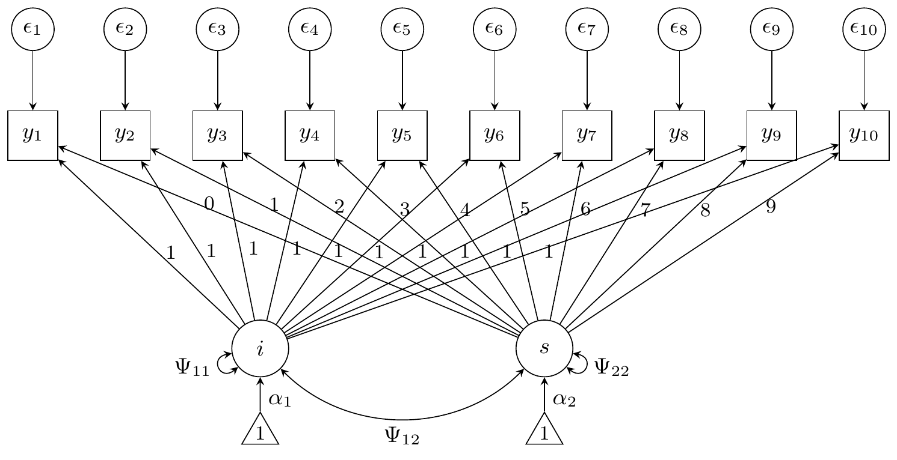

Structural equation models
Let , be independent multivariate data observations. A general form for structural equation models is the following: {#eq-measurement} where the errors are assumed to be normally distributed, and the latent factors are related to each other through the structural part of the model: {#eq-structural} where are the structural disturbances, and is a matrix of regression coefficients with 0 on the diagonals. The structural model can be rewritten as . Plugging this into @eq-measurement, we get the reduced form of the model, where each , with We have denoted by the collection of all free parameters (intercepts, loadings, regression coefficients, and variances) in the model. Evidently, the likelihood of the model is given by the multivariate normal density:
The gradient of the log-likelihood function with respect to a component of appearing in the mean vector is given by The gradient of the log-likelihood function with respect to a component of appearing in is given by where is the (biased) sample covariance matrix, and .
Growth curve model
For the growth curve model, we have a latent intercept and slope (so ). There are five parameters in the latent component: Two intercepts and , and the three unique variances and covariances , , and . The loadings for the “intercept” latent variable are all fixed to 1, whereas the loadings for the “slope” latent variable increment from 0 to 9. Thus, is some fixed matrix. Furthermore, the observed variables , share a common residual error variance . In total, there are six parameters to be estimated in the model (in this order): .

| Reliability = 0.8 | Reliability = 0.5 | |
|---|---|---|
| 0 | 0 | |
| 0 | 0 | |
| 550 | 275 | |
| 100 | 50 | |
| 40 | 20 | |
| 500 | 1300 |
For the growth curve model, the gradients are simplified somewhat:
The implementation in R code is also straightforward (see
R/40-manual_growth.R). Compare the behaviour of the eBR and iBR methods
using lavaan’s internals (via fit_sem()) and using manual
functions (via fit_growth()).
library(tictoc)
set.seed(26)
dat <- gen_data_growth(n = 15, rel = 0.5, dist = "Normal", scale = 1 / 10)
mod <- txt_mod_growth(0.5)
tru <- truth(dat)
tic.clearlog()
fit <- list()
tic("ML: lavaan")
fit$lav <- growth(mod, dat, start = tru)
toc(log = TRUE)
#> ML: lavaan: 0.214 sec elapsed
tic("ML: brlavaan")
fit$ML <- fit_sem(mod, dat, "none", lavfun = "growth", start = tru)
toc(log = TRUE)
#> ML: brlavaan: 0.029 sec elapsed
tic("eBR: brlavaan")
fit$eBR <- fit_sem(mod, dat, "explicit", lavfun = "growth", start = tru)
toc(log = TRUE)
#> eBR: brlavaan: 0.469 sec elapsed
tic("iBR: brlavaan")
fit$iBR <- fit_sem(mod, dat, "implicit", lavfun = "growth", start = tru)
toc(log = TRUE)
#> iBR: brlavaan: 1.789 sec elapsed
tic("ML: manual")
fit$MLman <- fit_growth(mod, dat, "none", start = tru[1:6])
toc(log = TRUE)
#> ML: manual: 0.032 sec elapsed
tic("eBR: manual")
fit$eBRman <- fit_growth(mod, dat, "explicit", start = tru[1:6])
toc(log = TRUE)
#> eBR: manual: 1.944 sec elapsed
tic("iBR: manual")
fit$iBRman <- fit_growth(mod, dat, "implicit", start = tru[1:6])
toc(log = TRUE)
#> iBR: manual: 7.752 sec elapsed
# Compare
c(list(truth = tru[1:6]), lapply(fit, \(x) round(coef(x)[1:6], 5)))
#> $truth
#> i~~i i~1 s~~s s~1 i~~s v
#> 2.75 0.00 0.50 0.00 0.20 13.00
#>
#> $lav
#> i~~i i~1 s~~s s~1 i~~s v
#> 3.84160 0.18158 0.78045 -0.12988 -0.52747 12.75903
#>
#> $ML
#> i~~i i~1 s~~s s~1 i~~s v
#> 3.84163 0.18157 0.78045 -0.12988 -0.52748 12.75907
#>
#> $eBR
#> i~~i i~1 s~~s s~1 i~~s v
#> 4.39245 0.18153 0.84284 -0.12985 -0.60927 12.75897
#>
#> $iBR
#> i~~i i~1 s~~s s~1 i~~s v
#> 4.28355 0.18157 0.82938 -0.12988 -0.59457 12.75902
#>
#> $MLman
#> i~~i i~1 s~~s s~1 i~~s v
#> 3.84163 0.18157 0.78045 -0.12988 -0.52748 12.75907
#>
#> $eBRman
#> i~~i i~1 s~~s s~1 i~~s v
#> 4.39129 0.18472 0.84293 -0.13016 -0.60957 12.75895
#>
#> $iBRman
#> i~~i i~1 s~~s s~1 i~~s v
#> 2.79306 -0.02384 0.77537 -0.05984 -0.07414 13.09462
sapply(fit, \(x) if (inherits(x, "lavaan")) x@optim$converged else x$converged)
#> lav ML eBR iBR MLman eBRman iBRman
#> TRUE TRUE TRUE TRUE TRUE TRUE FALSETwo factor model
For the two factor model, we have two latent variables and , each indicated by three observed variables, and respectively. Each observed variable has a corresponding error , leading to six variance parameters. The latent variables have a regression path from to with parameter , and each have a variance parameter and respectively. For the factor loadings, we fix and to for identifiability. The thirteen parameters to be estimated in the two factor model are . (In this order in the code).

| Reliability = 0.8 | Reliability = 0.5 | |
|---|---|---|
| 0.7 | 0.7 | |
| 0.6 | 0.6 | |
| 0.7 | 0.7 | |
| 0.6 | 0.6 | |
| 0.25 | 0.25 | |
| 0.25 | 1 | |
| 0.1225 | 0.49 | |
| 0.09 | 0.36 | |
| 0.25 | 1 | |
| 0.1225 | 0.49 | |
| 0.09 | 0.36 | |
| 1 | 1 | |
| 1 | 1 |
Due to diagonal matrices, we express the covariance parameters as the diagonal of the covariance matrices, which have all other entries as zero.
We have .